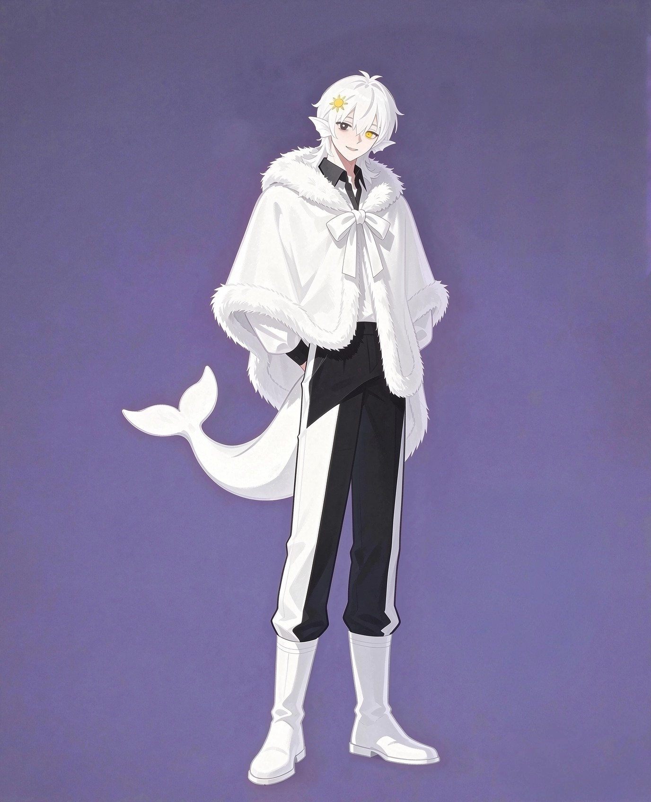
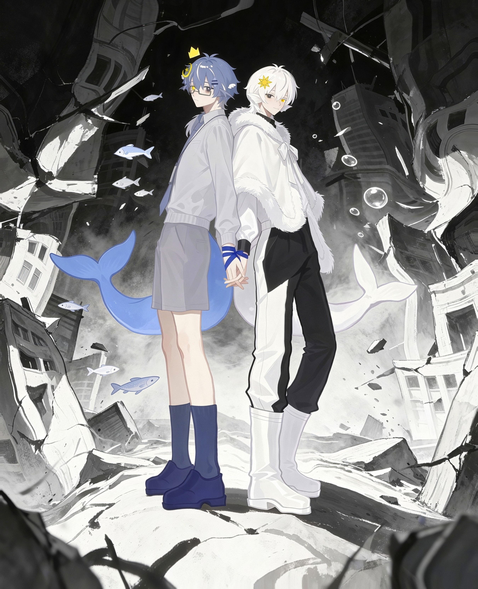
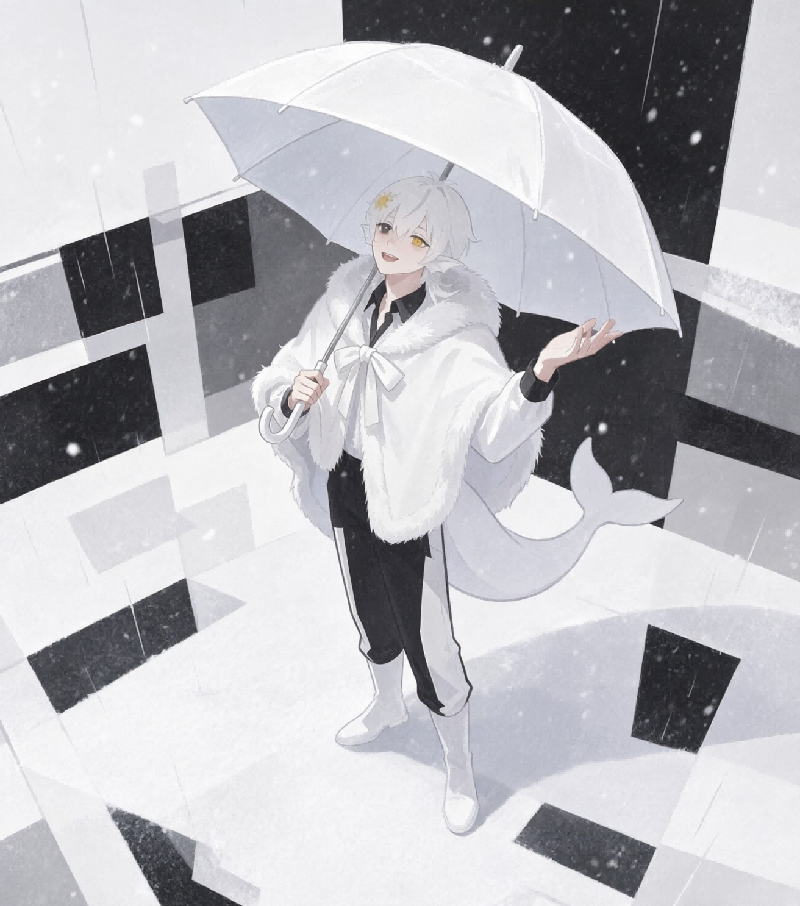
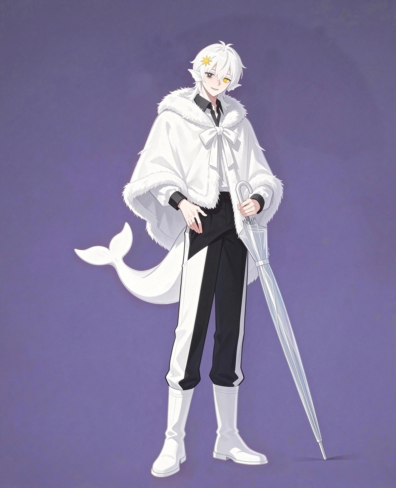
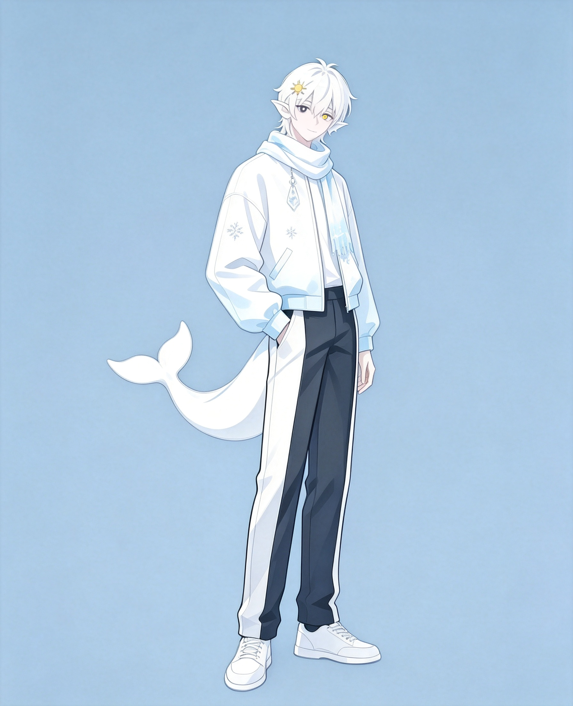

澪并非生物，而是由渝纪的魔力凝聚而成的。以渝纪的一颗眼睛为媒介，澪拥有了主观体验和渝纪的记忆。零作为在渝纪的领域内唯一的“人”，他同情渝纪的处境，也知道他一直以来的艰辛，于是澪作为他唯一的伙伴，与他一同度过那些难熬的时光，给他的人生增添一抹色彩。

澪作为渝纪的复制体，能依靠渝纪的眼睛建立二人感官与意识的共享

作为纯粹由魔力构筑出的存在，您可以敏锐的察觉到空气中的魔力的流动，以及他们的归属于哪里。借助这一能力澪可以察觉到敌人的来袭

拿伞的样子

日常的样子